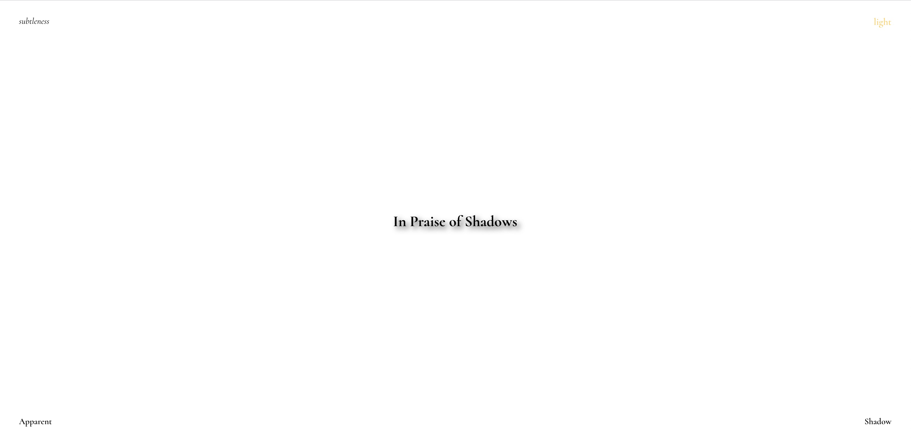
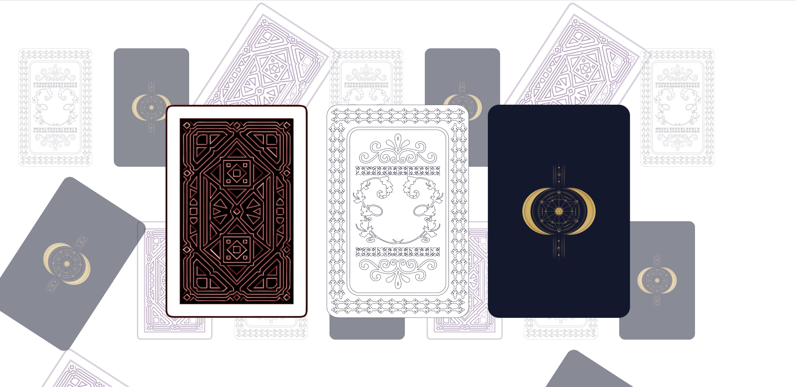
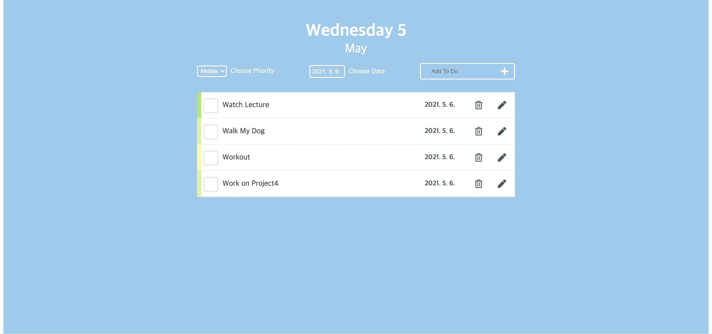
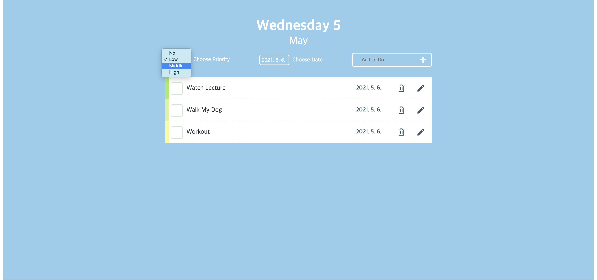
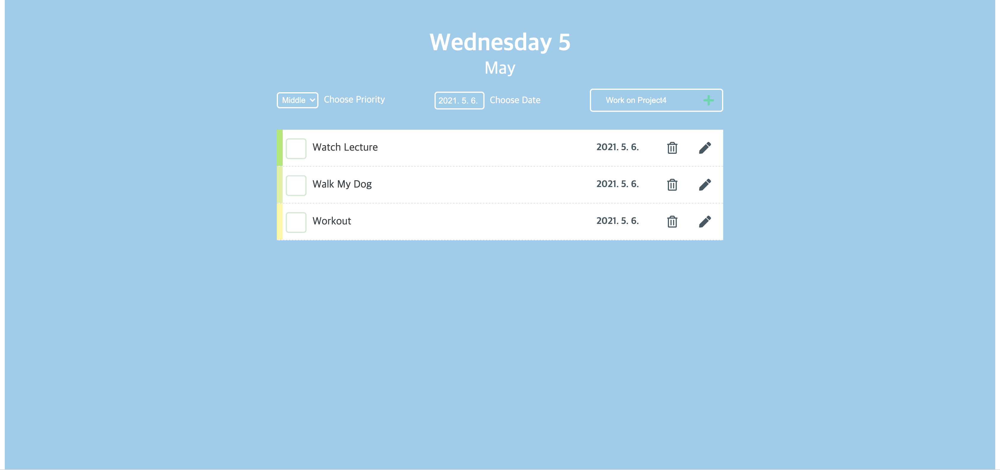
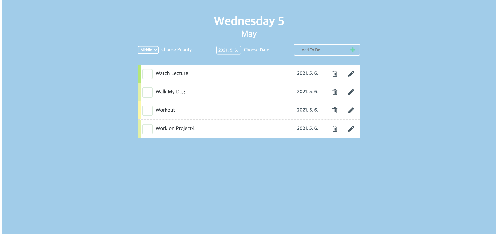

project 1
Time
Project 1

This is first project for core2: interaction Studio
We've experiment with user flow
This sequence of decisions and actions motivated by a specific task is called a **flow**.
A designer has anticipated every decision point and has provided the physical handles, beeps, button interface, and lights to help you complete your task without frustration.
This is interactive flow hat have some flows using various platforms.
Project2
In Praise of Shadow
Project 2
Project 2 is about interpretation of the story we've chose. We used the visual language of the webb-hypertext. responsive design, forms, colors, divs-to express the meaning of our selected story.
Project 3
Fortune Telling
Project 3
Project 3 is about collecting datas and organizing it and to design flexibility for content that we've can't control and reinterpret external sources of data into narrative experiences. We've experimented with interactions with a collection and connect and use structured content from API (Application Programming Interface)
Project 4
Input Output
Project 4
Click image to go to website
This is project 4 for core 2: interaction Studio class
We experiment with input output using javascript to create unique outputs
My OUtput Input is about to-do-list and you can priortize your daily list using input and output
You can also select schedule
And you can also add in your daily to do
Project 5
Interactive Zine
Project 6
Responsive Website